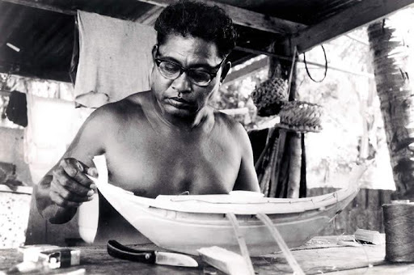

Mau sailed from Hawaii to Tahiti using traditional methods
In early 1976, Mau Piailug, a fisherman, led an expedition in which he sailed
a traditional Polynesian boat across 2,500 miles of ocean from Hawaii to Tahiti. The Polynesiai
Voyaging Society had organised the expedition. Its purpose was to find out if seafarers in the
distant past could have found their way from one island to the other without navigational
instruments, or whether the islands had been populated by accident. At the time, Mau was the only man alive who knew how to
navigate just by observing the stars, the wind and the sea. He had never before sailed to Tahiti, which was a long
way to the south. However, he understood how the wind and the sea behave around islands, so he
was confident he could find his way. The voyage took him and his crew a month to complete and he
did it without a compass or charts.
His grandfather began the task of teaching him how to navigate when he was still a baby. He showed him pools of water on the beach to teach him how the behaviour of the waves and wind changed in different places. Later, Mau used a circle of stones to memorise the positions of the stars. Each stone was laid out in the sand to represent a star.
The voyage proved that Hawaii’s first inhabitants came in small boats and navigated by reading the sea and the stars. Mau himself became a keen teacher, passing on his traditional secrets to people of other cultures so that his knowledge would not be lost. He explained the positions of the stars to his students, but he allowed them to write things down because he knew they would never be able to remember everything as he had done.